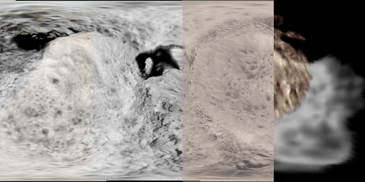

Planetary Maps
by Medium bluish violet Marker (Not actually my legal name obviously)
Planet maps i made so far, sometimes we do reinvent the wheel over here...
Note that the dates here use the DDMMYYYY format, mainly because i am European.
This is primarly a place where i reupload my DeviantArt maps because of school blocking software.
Mercury |
Venus |
Earth |
Mars |
Asteroid Belt |
Comets |
Jupiter |
Saturn |
Uranus |
Neptune |
Pluto |
Mars
Below is a 4K (almost) true color map of Mars i made.

True color-
(image updated 16/11/2024)
Saturn
Titan
Below is an 8K map of Titan i colored with a height map too. the height map was converted to grayscale via gradient mapping that was set to Hue mode.

True color,
Height-
(image updated 3/2/2024)
Hyperion
Below is an 2K map of Hyperion I constructed by
reprojecting and overlaying images from the Cassini flybys
onto a model of Hyperion
The Cassini images are from
NASA and Wikipedia

Mosaic,
Grayscale,
True color,
Height,
Model-
(image updated 19/08/2024)